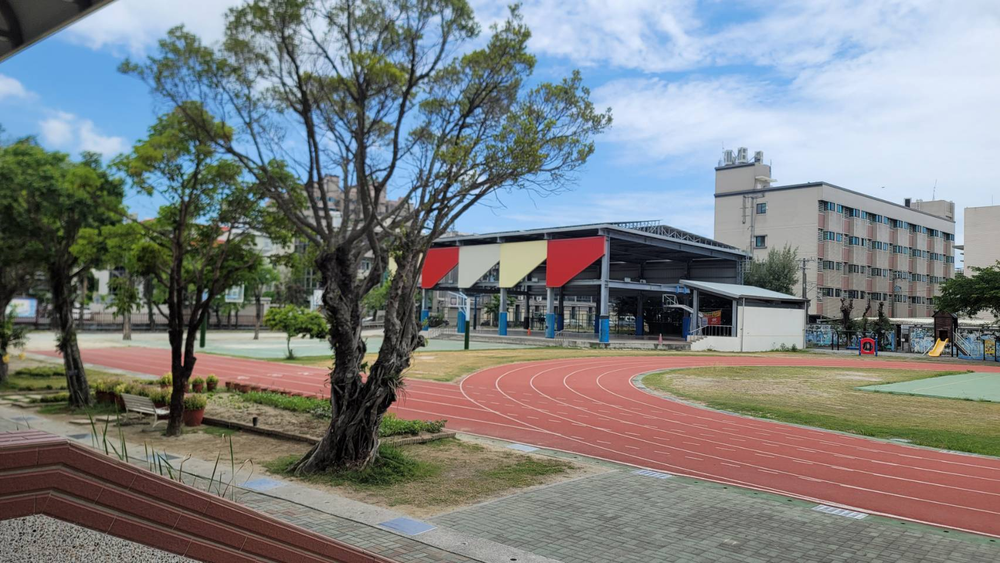
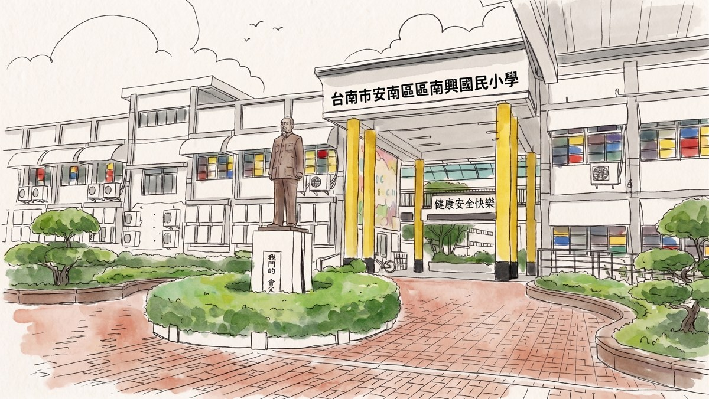

臺南市安南區南興國小
115學年度校慶運動大會暨系列活動
115學年度校慶運動大會暨系列活動

暨系列活動官方網站
凝聚公塭、南興庄頭深厚情誼，深植「恆毅力、自信心、正向動機、自省力」。
全校親師生、樂齡長輩與各界校友，攜手迎接熱力四射的南興年度盛典！

南興國小座落於台江沃土，擁有「金獅陣、蜈蚣陣、在地番茄紅寶石」三寶豐沛滋養。校慶不僅是一場體能競技，更是親師生與社區緊密相連的溫馨平台。今年我們特別強化了「互助合作精神總錦標」，並邀請港明高中的優秀青年志工投入服務，讓每位老師能全心陪伴孩子在紅綠藍團隊中學會相互扶持。誠摯邀請各位長官、貴賓、社區家長與傑出校友光臨南興，同享這份榮耀與喜悅！
自 11 月下旬起，校園逐日點燃運動熱情與團隊默契！
紅綠藍縱向競賽
幼兒200m、低400m、中高800m，全員累積耐力積分！
紅綠藍混齡趣味挑戰，凝聚小組默契與加油精神。
走訪公塭萬安宮與南興新南宮，結合蜈蚣與金獅文史尋根！
美式6球制快節奏對抗，中高年級全力比拼反應與走位。
全校進場、跳鼓、金獅及各年級舞蹈走位定位演練。
精彩賽程與多元展演接續登場，操場跑道、風雨球場與內草地動線分流，歡迎親師生與貴賓同歡！
| 時間 | 序號 / 類別 | 活動名稱與內容細節 | 場地位置 | 裁判主控、行政與志工協作 |
|---|---|---|---|---|
| 07:55-08:00 | 迎賓準備 | 貴賓簽到、學生各班進場集合、設備定位就緒、獎品盤點 | 風雨球場（室外） | 建榮主任、鈺真組長(獎品盤點)、Amos老師(攝影拍照)、志工群 |
| 08:00-08:30 | 開幕典禮 | 運動員進場 ➔ 跳鼓陣開場表演 ➔ 唱校歌/運動會歌 ➔ 主席與長官致詞 ➔ 頒發家長會長證書與獎學金 | 風雨球場（室外） | 校長、司儀、武憲老師(跳鼓)、宗修組長(音效)、Amos老師(攝影拍照) |
| 08:30-09:15 | 成果展演 |
1. 小小金獅陣（水樹教練） 2. 樂齡學員活力律動（樂齡中心） 3. 幼兒園活潑舞蹈（幼兒園教師群） 4. 低年級舞蹈成果展（敏瓊、美雅老師） 5. 中年級舞蹈成果展（鄭潔、喬恩老師） 6. 高年級舞蹈成果展（武憲、詒茹老師） 7. 全校健康操（全員起立賽前大熱身！） |
風雨球場（室外） | 各班導師、科任珮華老師、宗修組長(音效)、Amos老師(攝影拍照) |
| 09:15-09:25 | 整隊移地 | 全體師生與家長移步至「戶外操場」，各隊就位休息區，短跑選手至起點檢錄 | 操場草地 / 環形跑道 | 紅綠藍指導教師群、Amos老師(攝影拍照) |
| 09:25-10:00 | ① 個人短跑 | 計時決賽：幼兒60m ➔ 低年級60m ➔ 中年級80m ➔ 高年級100m（各組取前三名頒發校徽獎牌） | 操場環形跑道 |
發令：秀麗主任 檢錄：建榮主任＋高中志工1 計時拉線：高中志工2~6 成績：淇淇老師 獎品盤點發放：鈺真組長 攝影拍照：Amos老師 |
| 10:00-10:35 | ② 拔河 ＆ 鉛球 |
【拔河熱血大對抗】 • 幼兒園趣味拔河 ➔ 1~3年級紅綠藍拔河 ➔ 4~6年級紅綠藍拔河 ➔ 社區親師拔河表演賽 【社區家長與校友鉛球擲遠】 • 同步於操場內草地專區舉行，參賽家長人人獲贈實用毛巾香皂禮！ |
操場內草地 |
主裁判：秀麗主任 拔河安全：建榮主任、宗修組長 繩子定位/撿球：高中志工1~4 成績：淇淇老師 獎品與紀念品發送：鈺真組長＋志工5~6 攝影拍照：Amos老師 |
| 10:35-11:10 | ③ 趣味競賽 |
依序歡樂登場： 1. 紅綠藍趣味賽：蟲蟲危機（1~6年級學生跨年級毛毛蟲接力） 2. 幼兒園親子趣味賽：同心協力夾夾樂（萌娃與家長合力夾球） 3. 國小部親子趣味賽：協力運球（家長與學生搭檔展現默契） |
操場內草地 |
主持：秀麗主任 器材與折返點：高中志工1~6 成績：淇淇老師 獎品發放：鈺真組長 攝影拍照：Amos老師 紅綠藍導師全力現場帶隊 |
| 11:10-11:40 | ④ 大隊接力 |
上午壓軸最高潮賽事： 1. 1~3年級趣味大隊接力（納入紅綠藍積分累算！） 2. 4~6年級紅綠藍大隊接力（最高榮譽之戰） 3. 社區校友家長熱血接力示範賽（歡樂衝線） |
操場環形跑道 |
發令：秀麗主任 接力區踩線：高中志工1~4 終點裁判：宗修組長、建榮主任 計時拉線：高中志工5~6 成績統計：淇淇老師 獎品盤點發送：鈺真組長 攝影拍照：Amos老師 |
| 11:40-13:30 | 親職午宴約會 |
• 學生各自回班級用餐 • 長官、貴賓與家長移至 B1 小禮堂 享用樂齡媽媽現煮風味午餐，並舉行親職教育與學力宣導，公布上午各隊積分戰況 |
B1 小禮堂 （學生回各班教室） |
建榮主任、樂齡志工、鈺真組長、全體教職員 |
| 13:30-15:30 | 幸福親子團康 | 「幸福親子歡樂列車」外聘 CAOEE 專業講師群，操場與風雨球場分組互動破冰與趣味動感團康（表定進行至 15:30） | 操場 ＆ 風雨球場（室外） | 外聘講師群、全體導師、宗修組長、Amos老師(攝影拍照) |
| 15:30-15:50 | 閉幕與大摸彩 | 頒發競賽總錦標與互助合作錦標 ➔ 全校 118 位學生+幼生人人有獎 120+ 份大摸彩！（3:30至3:50高潮抽出） | 風雨球場（室外）舞台 | 校長、會長、鈺真組長(摸彩獎品發送)、淇淇老師、Amos老師(攝影拍照)、全體教職員 |
| 15:50-16:00 | 場地復原 | 全體親師生合力復原場地（16:00 準時放學平安賦歸！） | 全校區 | 全體親師生合力完成 |
不只比速度與力量，更看重「互助合作、隊呼精神、場地整潔與小隊長領導力」！
指導老師：楊詒茹、徐敏瓊、Amos (林承翰) 老師
指導老師：蔡武憲、羅珮華、鄭潔老師
指導老師：黃美雅、施喬恩、周婉琳老師
國小 103 位學子 ＋ 幼兒園 13 位萌娃 ＋ 全體辛勞教職員工！
校長與家長會全力號召各界仕紳熱心贊助，預計募集逾 120 份豐富好禮，人人有獎笑開懷！
場地分流清晰，家長觀賽舒心，學生安全競技！